坂田吾朗三手胜全套在线习题集之[中级篇1-10题]
#1 坂田吾朗三手胜全套在线习题集之[中级篇1-10题] 作者：空山 发表时间：2006-2-4 15:39:57
1、可以看图拆解，称之为目测吧。
2、这样所有题目的查看均不需要安装java虚拟机，也就不会出线看不到的情况了。
3、所有题目均可以在本地进行拆解，复制截图下方的棋谱代码，在打谱软件中打开就可以进行拆解，具体操作如下：
方法一：用爱五子棋打谱软件看谱拆解：
a、运行爱五子棋打谱软件[此处下载]
b、选中习题图下方的棋谱代码并复制
c、选择爱五子棋打谱软件“论坛”菜单，选择下方“输入南通连珠代码”命令
d、在弹出的窗口中粘贴棋谱代码。
方法二：用五子妙手软件看谱拆解：
a、运行五子妙手软件[此处下载]
b、选中习题图下方的棋谱代码并复制
c、选择五子棋妙手软件“棋谱”菜单，选择“打开特殊谱”->“打开iwzq棋谱”
d、在弹出的窗口中粘贴棋谱代码
e、注意：此时出线的棋谱和原谱是上下颠倒的，可以点击“垂直”按钮，即可。
4、一般来说，所有题目均不给出标准答案，如果在解题的时候有疑惑，可以复制对应的棋谱代码到交流区的 习题解答 板块中提问交流。
中级题第1问黑先如何胜？提示：上方白棋有斜眠三，黑棋进攻时要注意这一问题。
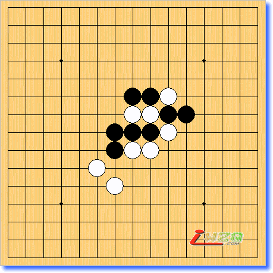
h8h7i8i7g8j8g7f6j9g5k9i9h10h9i10j10
#2 中级篇第2题 作者：空山 发表时间：2006-2-4 15:42:17
中级题第2问黑先如何胜？提示：根据白棋的防守情况，黑棋要随时变化进攻手顺。
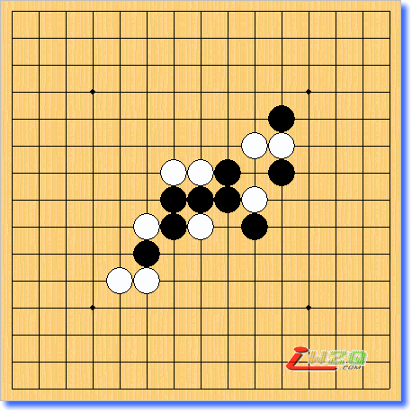
h8h7i8j8j7h9g8g9g7f7f6e5i9j10k9k10k11f5
#3 中级篇第3题 作者：空山 发表时间：2006-2-4 15:43:54
中级题第3问黑先如何胜？提示：“四三做杀是取胜之本”，这是取胜方法中有名的格言。
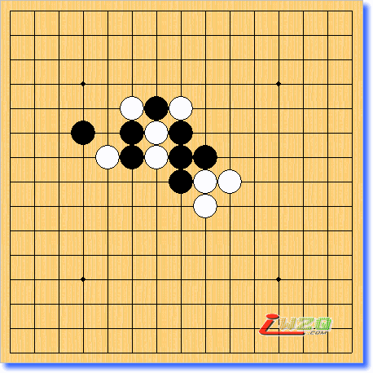
h8i7h9i8i9j8h10h11g11g10f10g9f9f11d10e9
#4 中级篇第4题 作者：空山 发表时间：2006-2-4 15:45:33
中级题第4问黑先如何胜？提示：手顺好得过分时，要注意禁手的困扰。
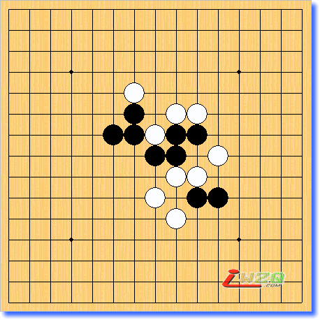
h8i7i8h6j6i5k6j7i9k8j9j10g9h9f9i10g10g11
#5 中级篇第5题 作者：空山 发表时间：2006-2-4 15:47:21
中级题第5问黑先如何胜？提示：黑棋有一手轻快的一子双杀。
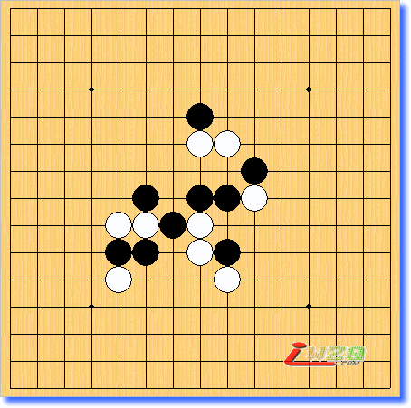
h8h7i8h6i6i5g7f7f6e5e6e7f8j8j9i10h11h10
#6 中级篇第6题 作者：空山 发表时间：2006-2-4 15:49:01
中级题第6问黑先如何胜？提示：做连冲杀首次登场。
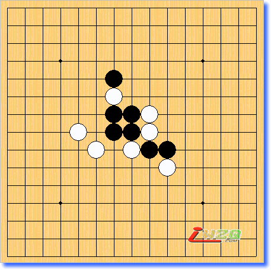
h8h7i7i8g9j6g8i9h9f7j7e8g11g10
#7 中级篇第7题 作者：空山 发表时间：2006-2-4 15:50:51
中级题第7问黑先如何胜？提示：请注意不要让白棋产生连续冲四的伏着。
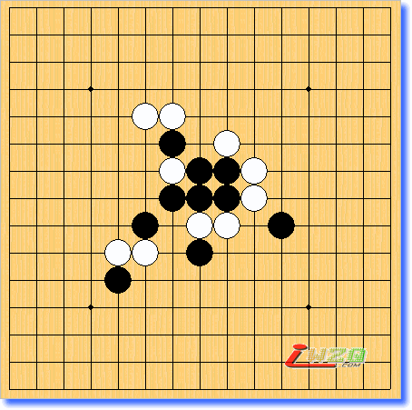
h8h7i8i7g8j8h6j9k7i10i9g9h9f6f7e6e5g11g10f11
#8 中级篇第8题 作者：空山 发表时间：2006-2-4 15:52:47
中级题第8问黑先如何胜？提示：“三三是四三的种”，这句格言的意义要事后才能体会出来。
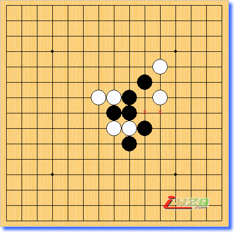
h8h7i8i7j7h9i6g9i9k9j10k11
#9 中级篇第9题 作者：空山 发表时间：2006-2-4 15:54:38
中级题第9问黑先如何胜？提示：用四三做杀和连冲交错进攻取胜。
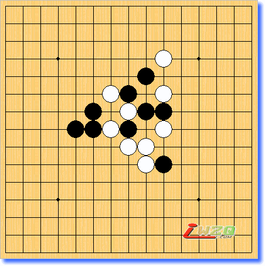
h8h7j6i7i9j8j9g8h10h9f9g10f8j10e8i6i11j12
#10 中级篇第10题 作者：空山 发表时间：2006-2-4 15:56:04
中级题第10问黑先如何胜？提示：白棋虽然有潜在的冲四攻击，但黑棋有妙着应对。
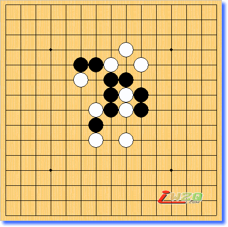
h8g8h9i8h10h11i10i9j9i6j8g6g7j11g11i12f11f10
#11 答案[中级篇第一题] 作者：有志青年 发表时间：2006-2-7 9:44:27
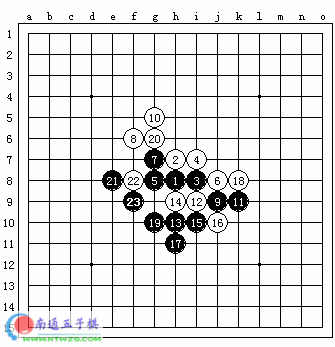
#12 答案[中级篇第2题] 作者：有志青年 发表时间：2006-2-7 9:51:11
白应上方
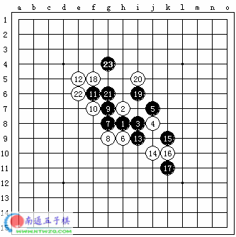
白应中间
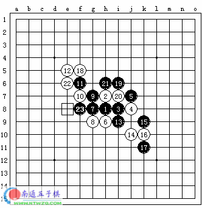
#13 Re:坂田吾朗三手胜全套在线习题集之[中级篇1-10题] 作者：chlx0418 发表时间：2006-2-7 10:04:41
第一条第一步G9就可以吧,白子怎么看都觉得慢的#14 Re:Re:坂田吾朗三手胜全套在线习题集之[中级篇1-10题] 作者：有志青年 发表时间：2006-2-7 10:16:23
引用：
原文由 chlx0418 发表于 2006-2-7 10:04:41 :
第一条第一步G9就可以吧,白子怎么看都觉得慢的
未细想，黑好像有个禁手点
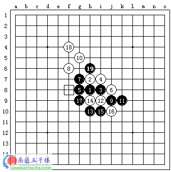#15 Re:坂田吾朗三手胜全套在线习题集之[中级篇1-10题] 作者：chlx0418 发表时间：2006-2-7 10:21:07
第2条第一步好象有三个变手,第一步放I6 然后白棋有I5 I7 I10三种
当白走I5时黑子走H5 1白子放E4黑子顺序K8/I10/H11
2白子放K8黑子顺序G4/G6
当白走I7时黑子走H6/F8就可以吧
当白走I10时黑子走I5/F8大概就可以了
#16 Re:坂田吾朗三手胜全套在线习题集之[中级篇1-10题] 作者：chlx0418 发表时间：2006-2-7 10:23:20
对对....哎我还是没考虑禁手,很难改习惯了啊#17 答案[中级篇第3题] 作者：有志青年 发表时间：2006-2-7 10:26:54
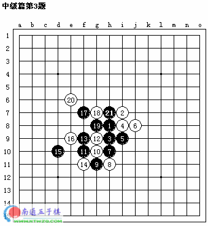
这道题目要非常小心白H6点的反击
#18 答案[中级篇第4题] 作者：有志青年 发表时间：2006-2-7 10:38:42
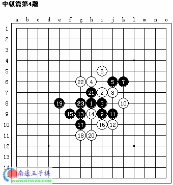#19 答案[中级篇第5题] 作者：有志青年 发表时间：2006-2-7 10:44:52
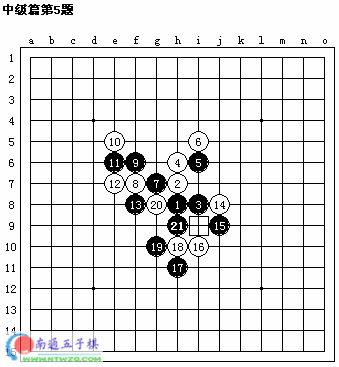#20 答案[中级篇第6题] 作者：有志青年 发表时间：2006-2-7 11:05:12
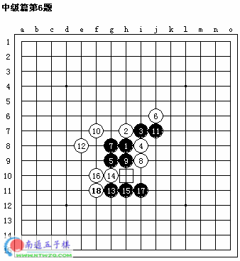#21 答案[中级篇第7题] 作者：有志青年 发表时间：2006-2-7 11:17:19
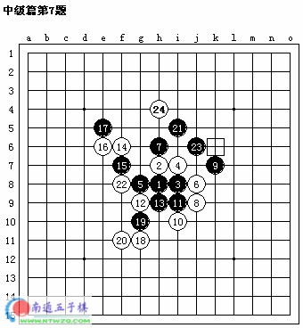
若黑21先走J6，则白的妙防决定黑的失败
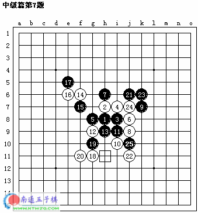
#22 答案[中级篇第8题] 作者：有志青年 发表时间：2006-2-7 12:21:26
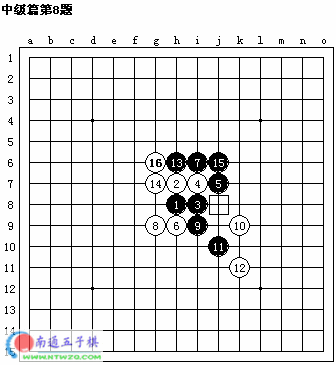 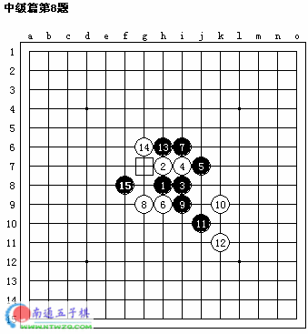
#23 答案[中级篇第9题] 作者：有志青年 发表时间：2006-2-7 13:31:55
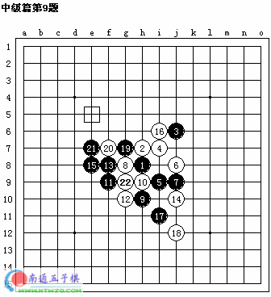
#24 答案[中级篇第10题] 作者：有志青年 发表时间：2006-2-7 13:38:38
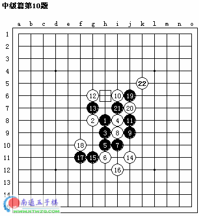#25 Re:坂田吾朗三手胜全套在线习题集之[中级篇1-10题] 作者：august 发表时间：2006-11-7 13:24:01
终于做完了，不过这应该算不了中级题吧？？
#26 Re:坂田吾朗三手胜全套在线习题集之[中级篇1-10题] 作者：wzq88 发表时间：2006-11-12 22:06:39
看不到什么东东#27 Re:坂田吾朗三手胜全套在线习题集之[中级篇1-10题] 作者：xr__ 发表时间：2007-8-25 22:49:25
收藏了#28 Re:坂田吾朗三手胜全套在线习题集之[中级篇1-10题] 作者：汪洋孤舟 发表时间：2008-5-11 23:10:15
呵呵，又长见识了呵！呵呵！#29 Re:答案[中级篇第10题] 作者：mushi 发表时间：2008-6-9 18:27:46
这个第十题就是个平衡局面吧，白十八手怎么下那呢，想不明白。#30 Re:坂田吾朗三手胜全套在线习题集之[中级篇1-10题] 作者：我能我能我能 发表时间：2009-8-19 0:05:26
实在是太简单了真的是中级题吗